Kullanım ve teknik kılavuz
Harcamalarını takip et, bütçenin durumunu hava durumu gibi gör.
Bu doküman her güncellemede yeniden üretilir. Veritabanı bölümü, veritabanının içine yazılmış açıklamalardan otomatik oluşturulur; değişiklik geçmişi son bölümdedir.
Klasik harcama uygulamaları grafik ve tablo gösterir; insanlar bir süre sonra bakmayı bırakır. Bütçe Hava Durumu, bütçenin bugünkü durumunu herkesin bir bakışta anladığı bir dille anlatır: hava durumu. Bugün güneşli mi, fırtına mı geliyor?
| Bugünün havası | Bugünkü harcaman günlük payınla karşılaştırılır; "gönül rahatlığıyla harcayabileceğin" tutar gösterilir. |
|---|---|
| Son 7 gün ve ay sonu tahmini | Her günün havası ve bu hızla ayın nasıl kapanacağı. |
| Geçmiş aylar | Önceki aylara gidip harcama ve bütçe girilebilir; ayın kapanış havası görünür. |
| Ortak hane | Eşler ve aileler aynı bütçeyi ve harcama listesini paylaşır. Herkes sadece kendi girdiğini siler. |
| Görevler ve bildirimler | Faturalar hane üyelerine atanır, son gün yaklaşınca bildirim gider; "Ödendi" deyince harcama eklenir. |
| Ay değerlendirmesi | Ay bitince değerlendirme ajanı ayı inceler: öne çıkanlar ve bir tavsiye, hane üyelerine bildirimle. |
| Birikim planlayıcı | "6 ayda ₺20.000" gibi bir hedef için planlayıcı ajan hangi kalemlerden kısılacağını ve aylık bütçeyi önerir; onaylayınca uygulanır. |
| Yapay zekâ | Cümleyle harcama ekleme, anlamsal arama ve verilerinden cevap veren bütçe asistanı. |
| Her cihazda | Web ve mobil uyumlu PWA; telefonda "Ana ekrana ekle" ile uygulama gibi çalışır. |
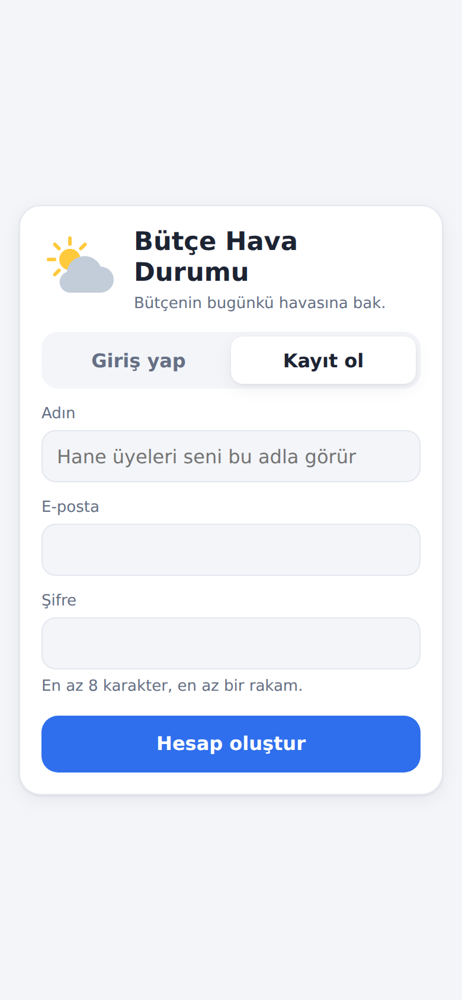
Uygulamayı ilk açtığında giriş ekranı gelir. Kayıt ol sekmesinde adını, e-postanı ve şifreni gir.
Hesaplardan önce bu tarayıcıda harcama girdiysen, ilk kayıtta bu harcamalar hesabına taşınır ve ekranda kaç harcamanın taşındığı yazar.
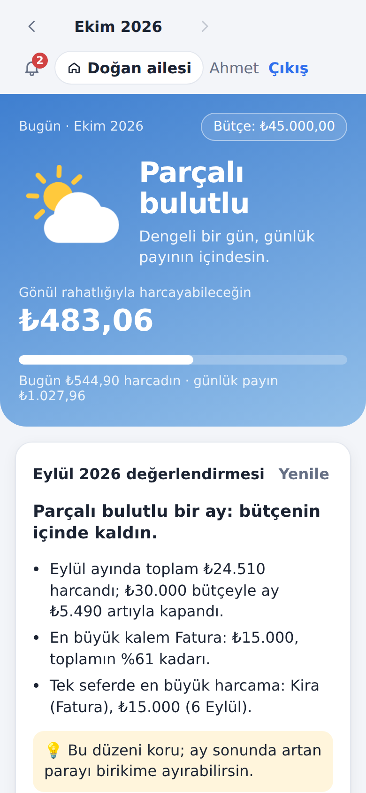
Hava durumu için önce o ayın bütçesi gerekir. İlk açılışta Aylık bütçeni belirle düğmesine bas; sonra değiştirmek için üstteki Bütçe: ₺… etiketine dokun.
Ana ekranın üst kısmı bugünün havasıdır:
Hesap kuralları teknik bölümde, hava durumu kurallarında anlatılır.
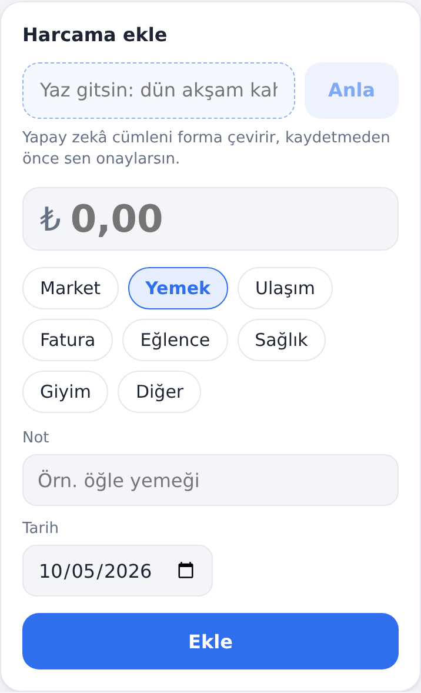
Tutarı yaz (85,50 ya da 1.250,75 gibi Türkçe yazım kabul edilir), kategoriyi seç, istersen not ekle ve Ekle'ye bas. Tarih bugündür; geçmiş bir gün de seçilebilir, gelecek seçilemez.
Cümleyle ekleme: üstteki kutuya "dün akşam kahveye 85 lira verdim" yazıp Anla'ya bas. Yapay zekâ tutarı, kategoriyi, notu ve tarihi forma doldurur. Kaydetmez: kontrol edip Ekle'ye sen basarsın.
Çift dokunma ya da bağlantı kopması harcamayı iki kez kaydetmez (idempotency).
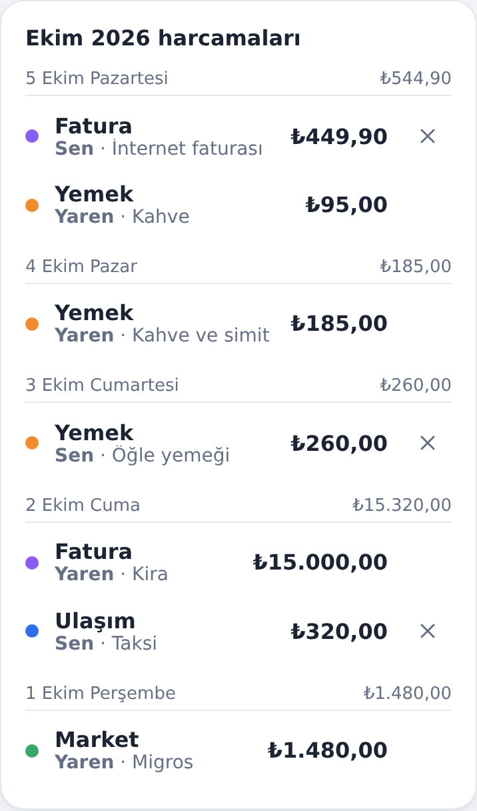
Liste, görüntülenen ayın harcamalarını güne göre gruplar. Hanedeysen her harcamada kimin girdiği yazar ("Sen" ya da üyenin adı).
Bir harcamayı silmek için yanındaki × işaretine bas. Hanede herkes tüm harcamaları görür ama sadece kendi girdiğini silebilir; başkasının harcamasında silme işareti çıkmaz.
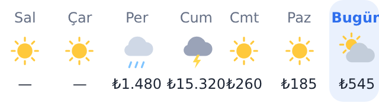
Son 7 günün havası her günün havasını ve o gün harcananı gösterir. Altındaki Ay sonu tahmini, bu hızla ayın kaç lirayla kapanacağını söyler.
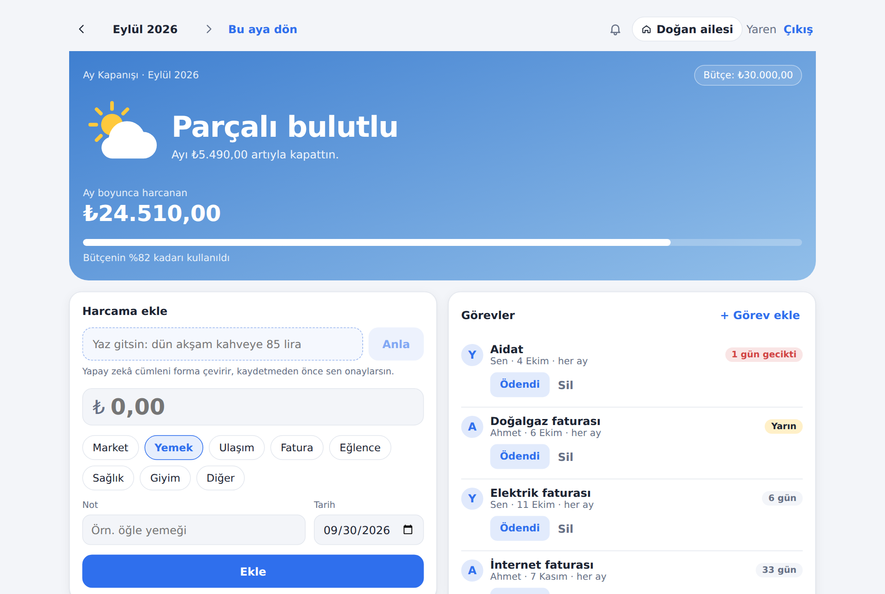
Sol üstteki ‹ okuyla önceki aylara gidilir; › ileri götürür, gelecek aya geçilemez. Bu aya dön ile hemen bugüne dönülür.
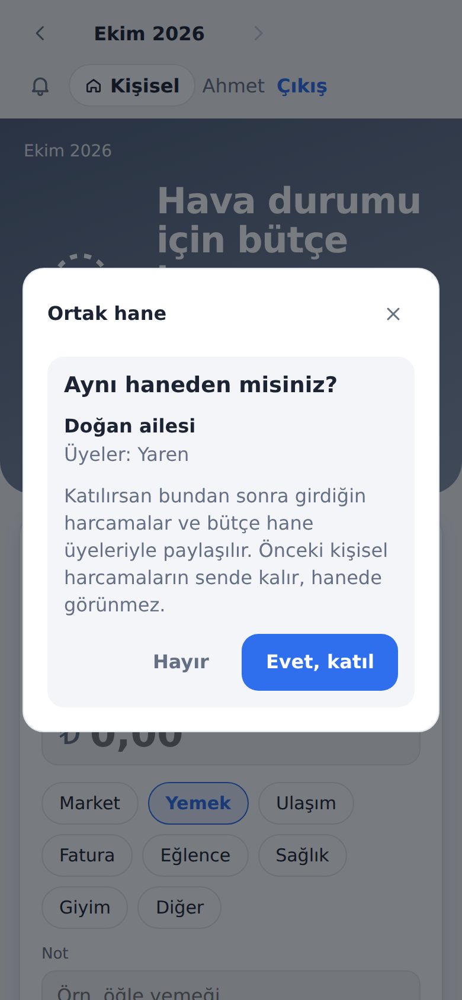
Evli çiftler ve aileler ortak bir defter tutar: aynı bütçe, aynı harcama listesi, aynı hava durumu. Üst çubuktaki Kişisel düğmesi hane panelini açar.
Katılınca eski kişisel harcamaların sende kalır, hanede görünmez. Haneden ayrılınca kişisel defterine dönersin; hane harcamaları hanede kalır.
Kişisel ↔ hane geçişi: Hanedeyken üst çubukta Kişisel | Hane adı seçicisi çıkar. Haneden ayrılmadan kişisel defterine geçersin: kendi bütçen, kendi harcamaların, kendi görevlerin. Harcama ekle kartının köşesinde hangi deftere ekleneceği yazar ("Kişisel defterine eklenir"). Kişisel defterini hane üyeleri görmez. Seçim bu cihazda hatırlanır; hane ayarları (davet kodu, üyeler, ayrılma) seçicinin yanındaki ev simgesindedir.
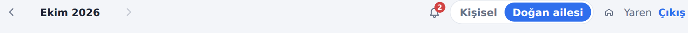
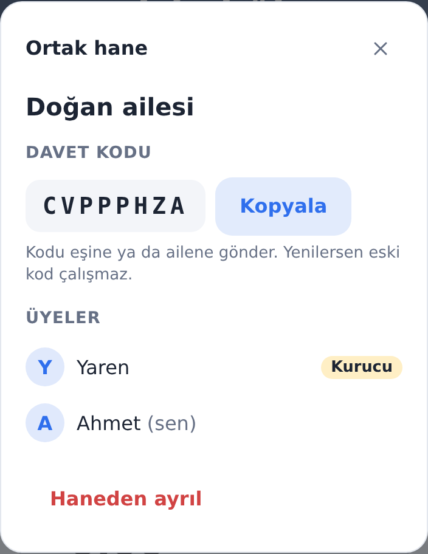
| Kural | Açıklama |
|---|---|
| Tek hane | Bir kişi aynı anda tek hanede olabilir. |
| En fazla 10 üye | Kötüye kullanım sınırı. |
| Bütçe | Her üye değiştirebilir (ortak karar). |
| Silme | Herkes sadece kendi girdiği harcamayı siler. |
| Kurucu | Üye çıkarır, davet kodunu yeniler (eski kod çalışmaz). Ayrılırsa kuruculuk en eski üyeye geçer. |
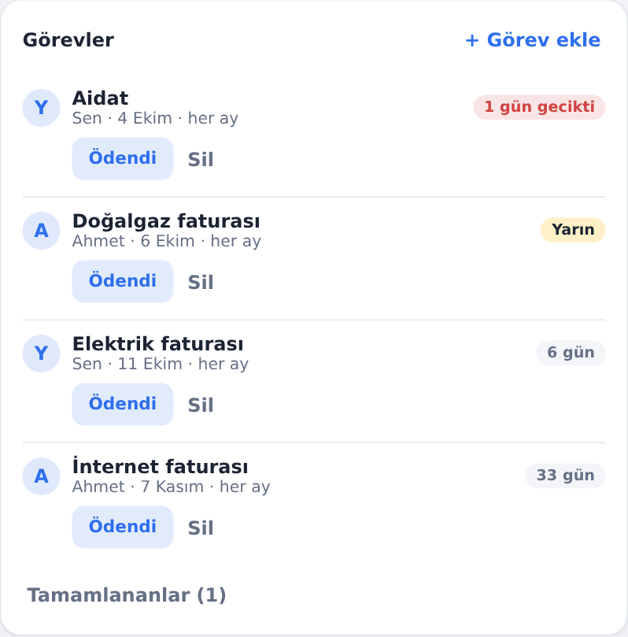
Faturaları ve ödemeleri kişilere dağıt: "Elektrik faturası → Yaren", "İnternet faturası → Ahmet". + Görev ekle ile görevin adını, kimin yapacağını, son günü ve ödenince kaydedilecek kategoriyi seç.
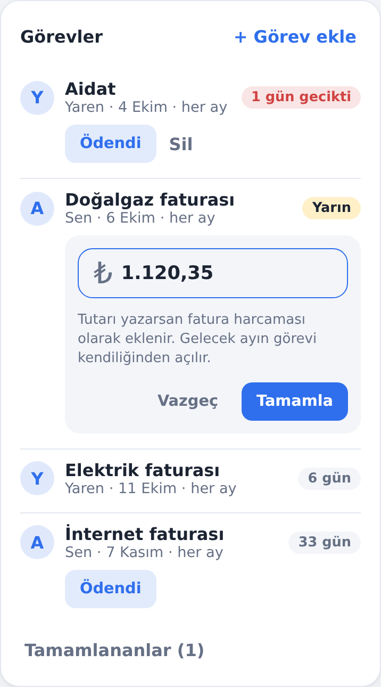
Ödendi: düğmeye basınca tutar sorulur. Tutarı yazarsan ödeme, görevin kategorisinde (varsayılan Fatura) hane harcamalarına eklenir ve bütçe havası güncellenir. Tutarı boş bırakırsan görev sadece tamamlanır.
Görev Anıl'ınsa ve "Ödendi"yi görevi veren Yaren işaretlediyse görev yine Anıl'ın kalır: harcama Anıl'ın adıyla kaydedilir (Anıl silebilir), tamamlananlar listesinde "Anıl · Yaren işaretledi" yazar ve Anıl'a bildirim gider.
Tamamlanan görevler kartın altındaki Tamamlananlar listesinde, kimin ödediği ve tutarıyla görünür.
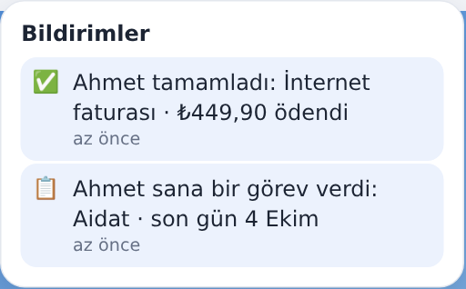
Üst çubuktaki zil, okunmamış bildirim sayısını gösterir. Zile basınca panel açılır ve hepsi okundu sayılır. Uygulama açıkken bildirimler dakikada bir yenilenir.
| Ne zaman | Kime |
|---|---|
| Görev verildi | Görevi alan (kendine verdiysen gitmez) |
| Son güne 3 gün kaldı | Görevi alan |
| Son gün geçti | Görevi alan |
| Görev tamamlandı | Görevi veren (ve başkası yaptıysa görevi alan) |
| Üye haneden ayrıldı | Görevleri devralan kurucu |
| Ay değerlendirmesi hazır | Hanenin tüm üyeleri |
| Birikim planı uygulandı | Planı uygulayan dışındaki üyeler |
Her hatırlatma bir kez gider. Bildirimler şimdilik uygulama içindedir; telefona bildirim (push) yoktur.
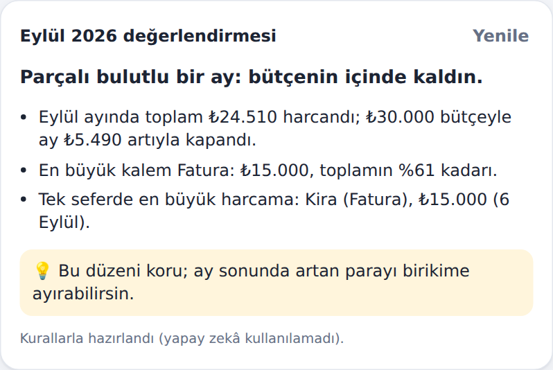
Her ay bittiğinde değerlendirme ajanı o ayı inceler ve kısa bir değerlendirme yazar: ayı özetleyen bir başlık, öne çıkan 2-4 gerçek (toplam, bütçe sonucu, en çok artan kategori, en büyük harcama, hanede kimin ne kadar girdiği) ve önümüzdeki ay için bir tavsiye. Hazır olunca hane üyelerine bildirim gider.
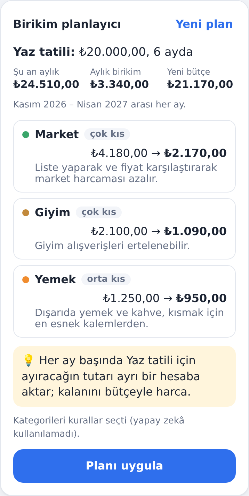
Bir hedefin mi var? Birikim planlayıcı kartına tutarı, kaç ayda biriktirmek istediğini ve istersen amacını yaz; Plan yap'a bas. Planlayıcı ajan son ayların harcamalarına bakar ve:
Fatura ve sağlık asla kısılmaz, hiçbir kategori yarısından fazla kısılmaz. Hedef istediğin sürede mümkün değilse plan uzatılır ve bu açıkça yazılır.
Plan önce sadece bir öneridir. Planı uygula ve onaydan sonra planın aylarındaki bütçeler yazılır (hanede herkes için). Plan, yapıldığı ayın ertesi ayından başlar. Hesabın nasıl yapıldığı Ajanlar bölümünde örnekle anlatılır.
Sağdaki Bütçe asistanı kutusuna Türkçe soru sor: "Bu ay bütçem nasıl gidiyor?", "Geçen ay en çok nereye harcadım?", "Kahveye ne kadar veriyorum?". Asistan cevabı uydurmaz; senin verilerini okuyan araçları çalıştırır ve cevabın altında hangi araçları kullandığını gösterir. Sayılar her zaman kodda hesaplanır, modelden gelmez.
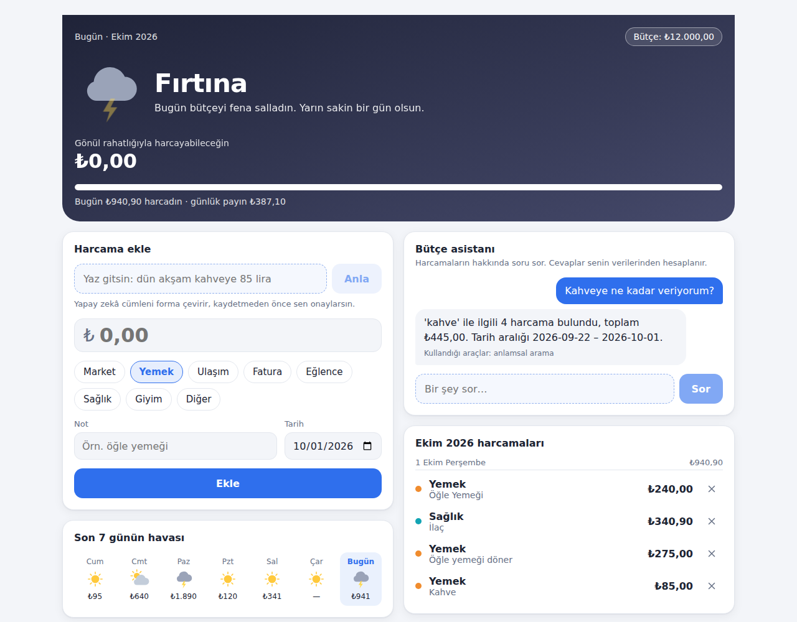
Yapay zekâ özellikleri için bir Gemini API anahtarı gerekir (kurulum bölümü). Anahtar yoksa uygulamanın geri kalanı çalışır; bu özellikler "yapılandırılmamış" mesajı verir. Ücretsiz katmanda gönderilen veriler Google tarafından model geliştirmede kullanılabilir; gerçek kişisel veri yerine örnek veriyle denemek iyi olur.
Uygulama bir PWA'dır. Telefonda tarayıcıdan aç; Android/Chrome'da menüden Ana ekrana ekle, iPhone/Safari'de Paylaş → Ana Ekrana Ekle. Simgesiyle açılır ve tam ekran çalışır.
Sadece Docker Desktop. .NET, Node ya da PostgreSQL kurmaya gerek yok; hepsi konteynerde çalışır.
git clone https://github.com/Yaren-Dogan/expense-trackingaistudio.google.com/apikey.env.example dosyasını .env olarak kopyala ve AI_API_KEY= satırını doldur. .env git'e eklenmez.docker compose up -d --buildhttp://localhost:8080cd expense-tracking git pull docker compose up -d --build
Veritabanı değişiklikleri (migration'lar) API açılırken otomatik uygulanır; veri kaybolmaz. Güncellemeden sonra eski ekran görünürse tarayıcıda Ctrl+Shift+R ile tam yenile.
| Servis | Adres | Ne işe yarar |
|---|---|---|
| web | http://localhost:8080 | Uygulama (nginx, React PWA). /api isteklerini API'ye iletir. |
| api | http://localhost:5080 | .NET API. Normalde web üzerinden kullanılır. |
| postgres | localhost:5432 | PostgreSQL 17 + pgvector. Veriler pgdata volume'ünde kalıcıdır. |
| adminer | http://localhost:8081 | Veritabanını tarayıcıdan görmek için panel. |
| ollama (opsiyonel) | — | docker compose --profile ollama up -d ile yerel model (~7 GB indirir). |
http://localhost:8081 adresinde şu bilgilerle giriş yap:
| Sistem | PostgreSQL |
|---|---|
| Sunucu | postgres |
| Kullanıcı | expense |
| Parola | expense_dev (sadece yerel geliştirme için; .env'de POSTGRES_PASSWORD ile değiştirilebilir) |
| Veri tabanı | expense_tracker |
Soldan bir tabloya tıklayınca yapı görünümünde tablonun ve her kolonun Türkçe açıklaması görünür ("Comment"/"Yorum"):
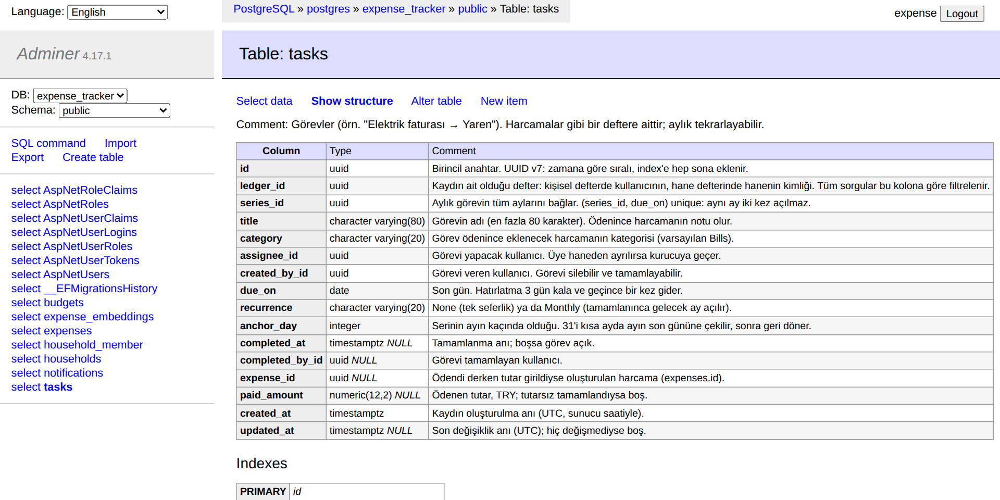
.env)| Değişken | Varsayılan | Açıklama |
|---|---|---|
AI_API_KEY | — | Gemini API anahtarı. Boşsa yapay zekâ uçları 503 döner. |
CHAT_MODEL | gemini-3.5-flash-lite | Sohbet/çıkarım modeli. |
EMBEDDING_MODEL | gemini-embedding-001 | Anlamsal arama vektör modeli. |
AI_PROVIDER | OpenAICompatible | Ollama ile yerel model. |
AGENT_MODE | Planned | Asistanın çalışma modu (yapay zekâ bölümü). |
POSTGRES_PASSWORD | expense_dev | Veritabanı şifresi. İnternete açılacaksa mutlaka değiştir. |
Backend Clean Architecture ile dört katmana ayrılır. Bağımlılıklar sadece içe doğrudur: Domain hiçbir şeye, Application sadece Domain'e bağlıdır. Veritabanı, kimlik ve yapay zekâ sağlayıcısı gibi dış dünya detayları en dış katmandadır; iş kuralları onlardan habersizdir ve tek başına test edilir.
| Katman | İçerik | Örnek |
|---|---|---|
| Domain | Entity'ler, iş kuralları, hava hesabı. Hiçbir pakete bağlı değil. | Expense.Create, Household.Join, HouseholdTask.Complete, BudgetWeather.ForDay |
| Application | Her kullanım senaryosu kendi klasöründe: komut/sorgu + handler + validator. | Features/Tasks/Commands/CompleteTask |
| Infrastructure | EF Core + PostgreSQL, Identity kullanıcıları, model istemcileri, arka plan işleri. | AppDbContext, PgvectorExpenseSearch, TaskReminderScheduler |
| Api | İnce controller'lar, oturum, hata cevapları (ProblemDetails), istek sınırı. | TasksController, LedgerMiddleware |
Örnek: Ahmet bir görevi "Ödendi" diye işaretliyor (POST /api/tasks/{id}/complete, tutar 449,90).
bhd.auth) kendiliğinden gönderir.401.CompleteTaskCommand'ı MediatR ile gönderir.400.task.Complete(...) ile görevi kapatır, aylık görevin gelecek ayını ekler, görevi verene bildirim yazar.409.Her harcama, bütçe ve görev bir deftere aittir (ledger_id). Kişisel defterin kimliği kullanıcının kimliği,
hane defterinin kimliği hanenin kimliğidir. Kullanıcının aktif defteri: bir hanedeyse hane defteri, değilse kişisel defteri.
Tüm okuma ve yazmalar aktif deftere göre filtrelenir; user_id sadece kaydı kimin girdiğini gösterir.
Hanedeki kullanıcı istediğinde kişisel defterine geçebilir: istemci X-Ledger: personal header'ı gönderir,
LedgerMiddleware aktif defteri kullanıcının kendi kimliği yapar. Hane defteri her zaman üyelikten belirlenir, header'dan
asla alınmaz; bu yüzden geçiş başka birinin verisine yol açamaz.
Bu tasarım sayesinde "katılınca eski harcamalar kişisel kalsın, ayrılınca hane harcamaları hanede kalsın" kuralı ek tablo ya da
kopyalama olmadan sağlanır. İzolasyon iki katmanlıdır: her sorguda açık LedgerId koşulu ve EF Core'un global query
filter'ı (unutulan koşula karşı ikinci savunma).
Gün d, ayın bütçesi B olsun:
S0 | Ayın başından d'den önceki güne kadar harcanan toplam |
|---|---|
R | d dahil ayın kalan gün sayısı |
| Günlük pay | A = max(0, (B − S0) / R) |
T | d günü harcanan toplam; oran r = T / A |
| Gönül rahatlığıyla harcanabilir | max(0, A − T) |
| Hava | Koşul |
|---|---|
| Güneşli | r ≤ 0,5 |
| Parçalı bulutlu | 0,5 < r ≤ 0,9 |
| Bulutlu | 0,9 < r ≤ 1,0; ya da bütçe bitti ama bugün harcama yok |
| Yağmurlu | 1,0 < r ≤ 1,5 |
| Fırtına | r > 1,5; ya da bütçe bitmişken harcama yapıldı |
Ay sonu tahmini: günlük ortalama (ay içi toplam / d.Day) × ayın gün sayısı; havası tahmin / B oranına
aynı eşiklerle uygulanır. Geçmiş bir ay son gününden bakıldığı için tahmin, gerçek toplamdır (ayın kapanışı).
"Bugün" Europe/Istanbul saat dilimine göredir.
| Karar | Neden |
|---|---|
Repository yok, handler'lar IAppDbContext ile LINQ yazar | EF Core zaten unit of work + repository; tekrar sarmak sadece kod çoğaltır. |
Durum değişikliği entity metodlarıyla (Complete, Join, ChangeAmount) | Kurallar tek yerde; geçersiz durum oluşturulamaz. |
| Kritik tekillikler unique index ile | "Önce kontrol et sonra yaz" yarışta bozulur; veritabanı garantisi bozulmaz. |
| Sadece unique ihlali yakalanır | Diğer veritabanı hataları gizlenmez, yukarı fırlar. |
TimeProvider + saat dilimi, DateTime.Now yok | Testlerde zaman sabitlenir; gece yarısı hataları olmaz. |
| UUID v7 birincil anahtar | Zamana göre sıralı: index'e sona eklenir, tahmin edilemez. |
Para decimal, tarih DateOnly | Kuruş yuvarlama hatası ve saat dilimi karışıklığı olmaz. |
Yetki sunucuda hesaplanır (canComplete, canDelete) | Arayüz sadece izin verilen düğmeyi gösterir; asıl kontrol API'dedir. |
Log'lar LoggerMessage + sabit EventId | Yapısal, hızlı ve aranabilir loglar; kullanıcı içeriği loglanmaz. |
| Konu | Uygulama |
|---|---|
| Şifre saklama | ASP.NET Core Identity, PBKDF2 hash. Şifre düz metin olarak hiçbir yerde tutulmaz. En az 8 karakter + rakam. |
| Oturum | HttpOnly cookie: sayfa script'leri okuyamaz (XSS ile token çalınamaz). SameSite=Strict + sadece JSON kabul eden API: başka siteden istek (CSRF) çalışmaz. 14 gün, kayan süre. |
| Kaba kuvvet | 5 hatalı şifrede hesap 5 dk kilitlenir. Kayıt/giriş uçlarında IP başına, davet kodu uçlarında kullanıcı başına dakikada 10 istek. |
| Model kotası | Model çağıran uçlar (asistan, cümleyle ekleme, anlamsal arama, değerlendirme, plan) kullanıcı başına dakikada 20 istekle sınırlı; tek kullanıcı herkesin kotasını tüketemez. |
| Oturum anahtarları | Cookie'leri şifreleyen anahtarlar veritabanında (data_protection_keys); güncellemeden sonra kimsenin oturumu kapanmaz. |
| Kullanıcı keşfi | Bilinmeyen e-posta ve yanlış şifre aynı cevabı alır; kayıtlı adresler bulunamaz. |
| Varsayılan kapalı | Her uç oturum ister (fallback policy). Açık olanlar sadece kayıt, giriş ve health. |
| Veri izolasyonu | Aktif deftere göre açık filtre + global query filter. Başka hanenin kaydına erişim 404. Defter seçici (X-Ledger: personal) sadece kullanıcının kendi kişisel defterini açabilir; hane defteri üyelikten gelir. |
| Yetki | Başkasının harcamasını silmek, görevini tamamlamak 403. Kurucu işlemleri sadece kurucu. |
| Veri sahiplenme | Eski cihaz verisi taşınırken kayıtlı bir kullanıcının ya da hanenin kimliği gönderilirse reddedilir. |
| Davet kodu | Karışan karakterler olmadan 8 karakter (~10¹² olasılık), kriptografik rastgele; kurucu yenileyebilir. |
| Gizli bilgiler | API anahtarı sadece .env'de (git'e girmez). Loglara kullanıcı cümlesi yazılmaz, sadece uzunluğu. |
| Yapay zekâ | Ajan araçları salt okunur ve kullanıcı/defter parametresi almaz; model başkasının verisini isteyemez. Harcama notları ve plan amacı talimat değil veri olarak ele alınır (prompt injection); kullanıcının metni talimatlara değil, etiketlenmiş kullanıcı mesajına girer. Modelin yazdığı metin rakam ya da bağlantı içeriyorsa kullanılmaz. Bütçeyi değiştiren tek yazma işlemi (plan uygulama) insan onayı ister. |
| Özellik | Teknik | Uç |
|---|---|---|
| Cümleyle harcama ekleme | Structured output (JSON schema) | POST /api/expenses/parse |
| Anlamsal arama | RAG retrieval: embedding + pgvector | GET /api/expenses/search?q= |
| Bütçe asistanı | AI agent: araç çağırma + RAG | POST /api/assistant/chat |
| Ay değerlendirmesi | Proaktif agent: arka planda aylık çalışır, inceler, seçer | POST /api/reviews/{ay} |
| Birikim planlayıcı | Agent + kod hesabı + insan onayı | POST /api/plans |
Kod Microsoft.Extensions.AI soyutlamalarına (IChatClient, IEmbeddingGenerator) yazılır; uygulama
mantığı hangi sağlayıcının kullanıldığını bilmez. Varsayılan Google Gemini (ücretsiz, disk kullanmaz); AI_PROVIDER=Ollama
ile yerel model.
daysAgo) çıkarır; tarihi kod hesaplar.422)."<Kategori>: <not>" metni olarak vektöre çevrilir; "kahve" araması notunda kahve geçmeyen "Starbucks latte"yi de bulur.Bütçe asistanı, ay değerlendirmesi ve birikim planlayıcı birer ajandır: bir döngü içinde araç seçer, sonucu görür ve karar verir. Nasıl çalıştıkları, araçları, güvenlik önlemleri ve örnek akışlarıyla bir sonraki bölümde anlatılır.
Bu projede iki tür ajan var: uygulama ajanları kullanıcı için çalışır (bütçe asistanı, ay değerlendirmesi, birikim planlayıcı); geliştirme ajanları uygulamayı yazarken Claude Code içinde çalışır (mimar, geliştirici, test, inceleme, güvenlik, migration, doküman). Bu bölüm ikisini de, nasıl çalıştıklarıyla birlikte anlatır.
Normal bir model çağrısı tek seferliktir: soru gider, cevap gelir. Agent (ajan) ise bir hedefe ulaşmak için hangi adımı atacağına kendisi karar veren, araç kullanan ve sonuca bakıp devam eden bir döngüdür.
| Parça | Ne işe yarar | Bu projede |
|---|---|---|
| Model | Karar verir: hangi araç, hangi parametre, ne zaman bitirilecek. | Gemini (ücretsiz) ya da yerel Ollama |
| Araçlar | Modelin dünyaya dokunduğu eller. Her birinin adı, açıklaması, parametre şeması var. | Hepsi salt okunur, kodda çalışır |
| Bağlam | Hedef, önceki adımlar ve araç sonuçları; model her turda bunları görür. | Sunucu durumsuz; her istek kendi döngüsü |
| Sınırlar | En fazla kaç tur, hangi araçlar, ne zaman insana sorulacağı. | 3-5 tur, yazma işlemi insan onayıyla |
| Ajan | Tür | Kim çalıştırır | Araçlar / yetki | Çıktı |
|---|---|---|---|---|
| Uygulama ajanları (kullanıcı için) | ||||
| Bütçe asistanı | Sohbet ajanı | Kullanıcı soru sorunca | 4 salt okunur araç | Cevap + kullanılan araçlar |
| Ay değerlendirmesi | Proaktif ajan | Arka plan işi (ay başı) ya da kullanıcı | DrillDown | Başlık, öne çıkanlar, tavsiye + bildirim |
| Birikim planlayıcı | Planlama ajanı | Kullanıcı hedef verince | InspectCategory | Plan önerisi; onayla bütçeler |
Geliştirme ajanları (Claude Code, .claude/agents/) | ||||
| architect | Planlayıcı | İşe başlarken | Okuma | Uygulama planı |
| implementer | Geliştirici | Plan aşaması başına | Okuma, yazma, komut | Kod + test |
| tester | Test mühendisi | /test-plan | Okuma, yazma, komut | Senaryolar + testler |
| reviewer | Kod inceleyici | /review | Okuma, komut | Bulgular |
| security-reviewer | Güvenlik inceleyici | /security-review | Okuma, komut | Güvenlik bulguları |
| migration-checker | Veritabanı inceleyici | /check-migration | Okuma, komut | Güvenli / dikkat / tehlikeli |
| docs-keeper | Doküman sorumlusu | /update-guide | Okuma, yazma, komut | Güncel kılavuz ve PDF |
get_budget_status (bugünün havası, kalan bütçe, ay sonu tahmini) ·
get_spending_by_category (tarih aralığında kategori toplamları) ·
list_expenses (en fazla 20 harcama, kimin girdiğiyle) ·
search_expenses (anlamsal arama, RAG).Answer seçer. En fazla 5 tur; aynı
araç aynı parametreyle tekrar istenirse döngü biter.search_expenses("kahve") → notunda kahve geçmeyen "Starbucks latte"
dahil ilgili harcamalar bulunur, toplamı ve tarih aralığını kod hesaplar → cevap.MonthFacts ayın gerçeklerini hesaplar; her birinin kimliği ve hazır cümlesi vardır:
total (toplam ve bütçe sonucu), total-change, cat-up/cat-down/cat-new:Kategori (en az ₺250 ve %25 değişim),
top (en büyük kalem), biggest (en büyük tek harcama), members (hanede kimin ne kadar girdiği),
quiet-days.DrillDown(Kategori): o kategorinin bu ay ve önceki ay hangi harcamalardan oluştuğunu kod hesaplar
ve yeni bir gerçek olarak (drill:Kategori) modele verir. En fazla 2 kez.Finish: başlık (rakamsız), seçilen gerçeklerin kimlikleri, tavsiye (rakamsız). En fazla 4 model çağrısı.DrillDown(Transport) → kod: "Ulaşım: bu ay 1 harcama, ₺1.440; en büyükleri Taksi (₺1.440)…"Finish → başlık "Bütçenin içinde ama ulaşım hızlandı.", gerçekler total,
cat-up:Transport, drill:Transport, tavsiye "Kısa yolları yürüyerek ya da toplu taşımayla gitmeyi dene."<amac> etiketiyle girer.InspectCategory(Kategori): kategoride en çok neye harcandığını, notlara göre gruplu olarak kod hesaplar
("Restoran, 5 kez, ₺3.100"). En fazla 2 kez.Finish: 1-3 kategori, her biri için seviye (Light az / Medium orta / Strong çok)
ve rakamsız gerekçe; bir alışkanlık önerisi.PlanMath: aylık birikim = hedef ÷ ay; birikim seçilen kategorilere seviye ağırlığıyla
(az %10, orta %20, çok %35 × ortalama) orantılı dağıtılır; kategori başına en fazla %50; yetmezse diğer esnek kategoriler
eklenir; yine yetmezse süre uzatılır (en fazla 24 ay). Fatura ve Sağlık asla kısılmaz; model seçse bile atılır.Hedef: 4 ayda ₺4.000. Son aylar: Fatura ₺15.000, Market ₺3.100, Yemek ₺1.900, Ulaşım ₺1.170, Eğlence ₺300 → toplam ₺21.470/ay.
Uygulama Claude Code ile geliştirilir. .claude/agents/ klasöründeki her dosya bir alt ajan tanımıdır: bir ad,
ne zaman kullanılacağını söyleyen açıklama, izin verilen araçlar (okuma, yazma, komut çalıştırma) ve rolünün talimatı. Ana
Claude oturumu bir işi ilgili alt ajana devreder; alt ajan kendi bağlamında çalışır ve sonucu raporlar. .claude/commands/
altındaki komutlar (/review gibi) bu ajanları tek komutla çalıştırır.
İşi uzmanlaşmış ajanlara bölmenin nedeni insan ekiplerdekiyle aynı: kodu yazan ile inceleyen ayrı olunca hatalar yakalanır; salt okunur ajanlar yanlışlıkla bir şeyi değiştiremez.
Görev: Yeni bir özellik için uygulama planı çıkarır; kod yazmaz.
Çıktı: amaç, oluşturulacak/değişecek dosyalar, domain değişiklikleri, yeni kolon ve index'ler, hangi testin neyi kanıtlayacağı, riskler (yarış durumu, izolasyon, saat dilimi). Belirsizlikleri tahmin etmez, soru olarak listeler.
Görev: Planın tek bir aşamasını kod ve testle uygular; kapsam dışına dokunmaz.
Kural: her davranış değişikliği bir testle gelir; bitirmeden dotnet build -warnaserror, dotnet test,
gerekirse npm run build/lint çalıştırır. Kırmızı varken "bitti" demez.
/test-planGörev: Kırılacak yeri bulur. Önce senaryo listesi: yetki ve izolasyon (başka hane, ayrılmış üye), zaman (ay sonu, Şubat, saat dilimi), eşzamanlılık (çift tıklama), girdi sınırları, model hataları, veritabanı.
Çıktı: eksik testleri yazar, çalıştırır; üretim kodunda hata bulursa düzeltmez, raporlar.
/reviewGörev: Değişikliği PRD maddeleri ve docs/standards.md listesiyle eşler; kayıtlı ama kullanılmayan servis,
filtresiz sorgu, genel catch, DateTime.Now, testsiz davranış arar.
Çıktı: Kritik/Yüksek/Orta/Düşük bulgular, dosya:satır ve düzeltme önerisi.
/security-reviewGörev: Bir ailenin verisinin başkasına geçmemesi. Defter izolasyonu, sunucu tarafı yetki, kimliğin kaynağı, açık uçlar ve rate limit, bilgi sızıntısı, yapay zekâ (salt okunur araçlar, prompt injection, insan onayı), gizli bilgiler, oturum.
Çıktı: saldırı senaryosuyla (kim, neyi, nasıl) bulgular ve düzeltmeler.
/check-migrationGörev: Gerçek veriyi koruma. Veri kaybı (drop, tip daraltma, rename yerine drop+add), yeni zorunlu kolonun doldurulması,
mevcut veride unique ihlali, Down() doğruluğu, snapshot tutarlılığı, büyük tabloda kilit süresi.
Çıktı: her migration için Güvenli / Dikkat / Tehlikeli kararı.
/update-guideGörev: Kod değişince dokümanları aynı commit'te güncel tutar: veritabanı açıklamaları (SchemaComments),
PRD'ler, bu kılavuzun kullanım ve teknik bölümleri, ekran görüntüleri, değişiklik geçmişi; PDF'i üretip sayfa sayfa kontrol eder.
Ay değerlendirmesi ve birikim planlayıcı yazıldıktan sonra security-reviewer çalıştırıldı. Kritik bulgu çıkmadı
(defter izolasyonu her sorguda doğrulandı); beş sorun bulundu ve hepsi düzeltildi:
| Bulgu | Risk | Düzeltme |
|---|---|---|
| Model çağıran uçlarda istek sınırı yok | Tek kullanıcı herkesin model kotasını tüketir | Kullanıcı başına dakikada 20 istek |
| Plan amacı talimatlara giriyor | Prompt injection ile tüm üyelerin göreceği metne müdahale | Amaç kullanıcı mesajında, etiketli |
| Notlardan gelen bağlantılar | Bildirimle tüm üyelere bağlantı taşınabilir | Model metninde bağlantı/e-posta reddi |
| Gerekçe uzunluğu sınırsız | Büyük metin kaydı | 200 karakter sınırı |
| Arka plan işi partilemesi | Eski cihaz defterleri gerçek haneleri bekletebilir | Üyesiz defterler partiden pay yemez |
PostgreSQL 17 + pgvector. Şema EF Core migration'larıyla yönetilir; API açılırken eksik migration'lar uygulanır. Tablo ve kolon
adları snake_case. Toplam {{tableCount}} tablo, {{columnCount}} kolon.
Bu bölümdeki açıklamalar elle yazılmadı: veritabanının kendi içindeki tablo ve kolon açıklamalarından
(COMMENT ON) üretildi. Aynı açıklamalar Adminer'da tablo yapısında "Yorum" sütununda görünür. Kaynağı kodda
SchemaComments.cs'tir; açıklaması olmayan yeni bir kolon eklenirse otomatik test başarısız olur.
ledger_id taşır: kişisel defterde kullanıcının, hane defterinde hanenin kimliği.
Düz çizgi yabancı anahtar (FK), kesikli çizgi uygulamanın kurduğu mantıksal bağdır. Diyagram ana tabloları gösterir;
month_reviews ve budget_plans da ledger_id taşır. Tam liste aşağıdadır.Tüm uçlar /api altında JSON konuşur ve oturum ister (aksi belirtilmedikçe). Hatalar RFC 7807 ProblemDetails
olarak döner; doğrulama hatalarında alan bazlı errors vardır. Durum kodları: yok 404, yetkisiz işlem
403, çakışma 409, oturum yok 401, model servisi yok 503.
| Metot | Yol | Açıklama |
|---|---|---|
| Hesap | ||
| POST | /api/account/register | Kayıt + giriş (açık uç). deviceUserId ile eski cihaz verisi taşınır |
| POST | /api/account/login | Giriş (açık uç) |
| POST | /api/account/logout | Çıkış |
| GET | /api/account/me | Oturumdaki kullanıcı, hanesi ve aktif defter (ledger) |
Tüm uçlar X-Ledger: personal header'ıyla hanedeki kullanıcının kişisel defterinde çalışır. | ||
| Harcama, bütçe, hava | ||
| GET | /api/expenses?month=2026-10 | Ayın harcamaları (kimin girdiğiyle) |
| POST | /api/expenses | Harcama ekle; Idempotency-Key header'ı opsiyonel (201, tekrar 200) |
| DELETE | /api/expenses/{id} | Harcama sil (sadece giren) |
| GET / PUT | /api/budgets/{yyyy-MM} | Ayın bütçesini oku / belirle |
| GET | /api/weather?date=2026-10-05 | Hava durumu ekranı (bugün, son 7 gün, ay sonu tahmini) |
| Hane | ||
| GET | /api/households/current | Hanem (yoksa 204) |
| POST | /api/households | Hane kur |
| GET | /api/households/invites/{code} | Davet önizleme: "Aynı haneden misiniz?" |
| POST | /api/households/join | Koda göre katıl |
| POST | /api/households/leave | Haneden ayrıl |
| DELETE | /api/households/members/{userId} | Üye çıkar (kurucu) |
| POST | /api/households/invite-code | Davet kodunu yenile (kurucu) |
| Görev ve bildirim | ||
| GET | /api/tasks | Açık görevler ve son 20 tamamlanan |
| POST | /api/tasks | Görev ver |
| POST | /api/tasks/{id}/complete | Tamamla; amount verilirse harcama eklenir |
| DELETE | /api/tasks/{id} | Sil (veren ya da kurucu) |
| GET | /api/notifications | Son 30 bildirim ve okunmamış sayısı |
| POST | /api/notifications/read | Hepsini okundu yap |
| Yapay zekâ | ||
| POST | /api/expenses/parse | Cümleden harcama önerisi (kaydetmez) |
| GET | /api/expenses/search?q=kahve | Anlamsal arama |
| POST | /api/assistant/chat | Bütçe asistanı (sohbet geçmişi istemcide, en fazla 20 mesaj) |
| GET | /api/reviews/{yyyy-MM} | Ayın değerlendirmesi (yoksa 204) |
| POST | /api/reviews/{yyyy-MM} | Değerlendirmeyi yaz ya da getir; ?refresh=true yeniden yazar |
| GET | /api/plans/latest | Son birikim planı (yoksa 204) |
| POST | /api/plans | Plan iste: goalAmount, months, purpose |
| POST | /api/plans/{id}/apply | Planı uygula: planlanan ayların bütçesini yazar |
| Sistem | ||
| GET | /health | Sağlık kontrolü (açık uç) |
| Proje | Ne test eder |
|---|---|
| Domain.Tests | Hava hesabı eşikleri, entity kuralları (hane, görev, aylık tekrar, kısa ay), saf ve hızlı. |
| Application.Tests | Validator'lar, yapay zekâ prompt/çıktı işleme (sahte model), bildirim metinleri. |
| Api.IntegrationTests | Gerçek PostgreSQL (Testcontainers) üzerinde uçtan uca HTTP: oturum, izolasyon, hane, görev, hatırlatma, RAG, ajan, şema açıklamaları. |
FakeTimeProvider); takvim değişince testler bozulmaz.dotnet build -warnaserror: uyarı da hata sayılır. Frontend npm run build (tip kontrolü) ve npm run lint.Geliştirmede kullanılan Claude Code ajanları (architect, implementer, tester, reviewer, security-reviewer, migration-checker, docs-keeper) Ajanlar bölümünde anlatılır.
dotnet build -warnaserror dotnet test # Docker gerekir (Testcontainers) cd web && npm ci && npm run build && npm run lint dotnet ef migrations add <Ad> -p src/ExpenseTracker.Infrastructure -s src/ExpenseTracker.Api cd docs/guide && npm install && npm run all # bu kılavuzu yeniden üretir